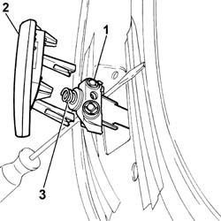
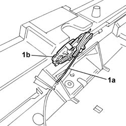
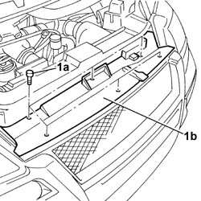
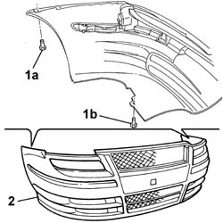

7210E10 R.R. FRONT BUMPER
- Path
- Procedures > 72 PANELS AND FRAME > 7210 REMOVING REFITTING > 7210E EXTERNAL PARTS > 7210E10 R.R. FRONT BUMPER
- Kind
- repair procedure (removal / refitting; the operation number is the code)
- Applies to
- all engines; all production periods
- Interactive page
- https://sloeber94.github.io/elrnDB-fUlss/en/#/179000705
Applies to: all engines; all production periods
 Removing
Removing
 Refitting
RefittingOp. 4450B12 FRONT OR REAR WHEELS (TWO) - R+R
Op. 7055B90 LEFT FRONT WHEEL ARCH LINER - R.R.
Op. 7055B91 RIGHT FRONT WHEEL ARCH LINER - R.R.
- Protect the area surrounding the headlamp washer trim.
1. Using a suitable tool, extract the headlamp washer jet.
2. Release and remove the trim.
3. Keep the spring.
- Remove the tool and release the headlamp washer jet.

Applies to: all engines; all production periods
1. Release the bonnet release cable (1a) from the bonnet lock (1b).

Applies to: all engines; all production periods
1. Undo the fixing bolts (1a) and remove the front bumper grille (1b).

Applies to: all engines; all production periods
1. Undo the upper (1a) and lower (1b) fixing bolts.
2. Remove the front bumper from the housing.

Applies to: all engines; all production periods
Refitting
Removing- Place the front bumper in position.
- Tighten the upper and lower bolts fixing the bumper.
- Fit the front bumper grille and fasten it using the bolts.
- Reposition the bonnet release cable and secure it to the bonnet lock.
- Using a suitable tool, extract the headlamp washer jet.
- Position the spring on the headlamp washer jet.
- Position the trim and secure it to the headlamp washer jet.
- Remove the tool and release the headlamp washer jet.
- Remove the protection positioned previously.
Op. 7055B91 RIGHT FRONT WHEEL ARCH LINER - R.R.
Topics linked from this page (3)
- 4450B12 FRONT OR REAR WHEELS (TWO) - R+R
- 7055B90 LEFT FRONT WHEEL ARCH LINER - R.R.
- 7055B91 RIGHT FRONT WHEEL ARCH LINER - R.R.